The Cell Cycle, Mitosis, and Meiosis
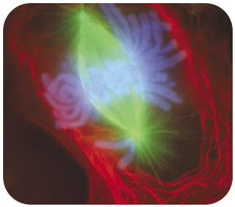
What do you think this colorful picture shows? If you guessed that it’s a picture of a cell undergoing cell division, you are right. In fact, the picture is an image of a lung cell stained with fluorescent dyes undergoing mitosis, specifically during early anaphase. You will read about mitosis, a type of cell division, in this chapter.
Cell division is just one of the stages that all cells go through during their life. This includes cells that are harmful, such as cancer cells. Cancer cells divide more often than normal cells, and grow out of control. In fact, this is how cancer cells cause illness. In this chapter, you will read about how cells divide, what other stages cells go through, and what causes cancer cells to divide out of control and harm the body.
Cell Division and the Cell Cycle
Lesson Objectives
-
Contrast cell division in prokaryotes and eukaryotes.
-
Identify the phases of the eukaryotic cell cycle.
-
Explain how the cell cycle is controlled.
-
Define cancer, and relate it to the cell cycle.
Vocabulary
-
binary fission
-
cancer
-
cell cycle
-
cell division
-
cytokinesis
-
DNA replication
-
interphase
-
mitosis
-
tumor
Introduction
You consist of a great many cells, but like all other organisms, you started life as a single cell. How did you develop from a single cell into an organism with trillions of cells? The answer is cell division. After cells grow to their maximum size, they divide into two new cells. These new cells are small at first, but they grow quickly and eventually divide and produce more new cells. This process keeps repeating in a continuous cycle.
Cell Division
Cell division
is the process in which one cell, called the parent cell, divides to form two new cells, referred to as daughter cells. How this happens depends on whether the cell is prokaryotic or eukaryotic.
Cell division is simpler in prokaryotes than eukaryotes because prokaryotic cells themselves are simpler. Prokaryotic cells have a single circular chromosome, no nucleus, and few other organelles. Eukaryotic cells, in contrast, have multiple chromosomes contained within a nucleus and many other organelles. All of these cell parts must be duplicated and then separated when the cell divides.
Cell Division in Prokaryotes
Most prokaryotic cells divide by the process of
binary fission
. A bacterial cell dividing this way is depicted in
Figure
below
. You can also watch an animation of binary fission at this link:
http://en.wikipedia.org/wiki/File:Binary_fission_anim.gif
.

Binary Fission in a Bacterial Cell. Cell division is relatively simple in prokaryotic cells. The two cells are dividing by binary fission. Green and orange lines indicate old and newly-generated bacterial cell walls, respectively. Eventually the parent cell will pinch apart to form two identical daughter cells. Left, growth at the center of bacterial body. Right, apical growth from the ends of the bacterial body.
Binary fission can be described as a series of steps, although it is actually a continuous process. The steps are described below and also illustrated in
Figure
below
. They include DNA replication, chromosome segregation, and finally the separation into two daughter cells.
-
Step 1:
DNA Replication
. Just before the cell divides, its DNA is copied in a process called DNA replication. This results in two identical chromosomes instead of just one. This step is necessary so that when the cell divides, each daughter cell will have its own chromosome.
-
Step 2: Chromosome Segregation. The two chromosomes segregate, or separate, and move to opposite ends (known as “poles”) of the cell. This occurs as each copy of DNA attaches to different parts of the cell membrane.
-
Step 3: Separation. A new plasma membrane starts growing into the center of the cell, and the cytoplasm splits apart, forming two daughter cells. As the cell begins to pull apart, the new and the original chromosomes are separated. The two daughter cells that result are genetically identical to each other and to the parent cell. New cell wall must also form around the two cells.
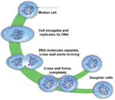
Steps of Binary Fission. Prokaryotic cells divide by binary fission. This is also how many single-celled organisms reproduce.
Cell Division in Eukaryotes
Cell division is more complex in eukaryotes than prokaryotes. Prior to dividing, all the DNA in a eukaryotic cell’s multiple chromosomes is replicated. Its organelles are also duplicated. Then, when the cell divides, it occurs in two major steps:
-
The first step is
mitosis
, a multi-phase process in which the nucleus of the cell divides. During mitosis, the nuclear membrane breaks down and later reforms. The chromosomes are also sorted and separated to ensure that each daughter cell receives a complete set of chromosomes. Mitosis is described in greater detail in the lesson “Chromosomes and Mitosis.”
-
The second major step is cytokinesis. As in prokaryotic cells, during this step the cytoplasm divides and two daughter cells form.
The Cell Cycle
Cell division is just one of several stages that a cell goes through during its lifetime. The
cell cycle
is a repeating series of events that include growth, DNA synthesis, and cell division. The cell cycle in prokaryotes is quite simple: the cell grows, its DNA replicates, and the cell divides. In eukaryotes, the cell cycle is more complicated.
Eukaryotic Cell Cycle
The diagram in
Figure
below
represents the cell cycle of a eukaryotic cell. As you can see, the eukaryotic cell cycle has several phases. The mitosis phase (M) actually includes both mitosis and cytokinesis. This is when the nucleus and then the cytoplasm divide. The other three phases (G1, S, and G2) are generally grouped together as
interphase
. During interphase, the cell grows, performs routine life processes, and prepares to divide. These phases are discussed below. You can watch a eukaryotic cell going through these phases of the cell cycle at the following link:
http://www.cellsalive.com/cell_cycle.htm
.
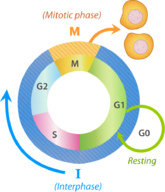
Eukaryotic Cell Cycle. This diagram represents the cell cycle in eukaryotes. The G1, S, and G2 phases make up interphase (I). The M phase includes mitosis and cytokinesis. After the M phase, two cells result.
Interphase
Interphase of the eukaryotic cell cycle can be subdivided into the following three phases, which are represented in
Figure
above
:
-
Growth Phase 1 (G1):
during this phase, the cell grows rapidly, while performing routine metabolic processes. It also makes proteins needed for DNA replication and copies some of its organelles in preparation for cell division. A cell typically spends most of its life in this phase. This phase is also known as gap phase 1.
-
Synthesis Phase (S):
during this phase, the cell’s DNA is copied in the process of DNA replication.
-
Growth Phase 2 (G2):
during this phase, the cell makes final preparations to divide. For example, it makes additional proteins and organelles. This phase is also known as gap phase 2.
Control of the Cell Cycle
If the cell cycle occurred without regulation, cells might go from one phase to the next before they were ready. What controls the cell cycle? How does the cell know when to grow, synthesize DNA, and divide? The cell cycle is controlled mainly by regulatory proteins. These proteins control the cycle by signaling the cell to either start or delay the next phase of the cycle. They ensure that the cell completes the previous phase before moving on. Regulatory proteins control the cell cycle at key checkpoints, which are shown in
Figure
below
. There are a number of main checkpoints.
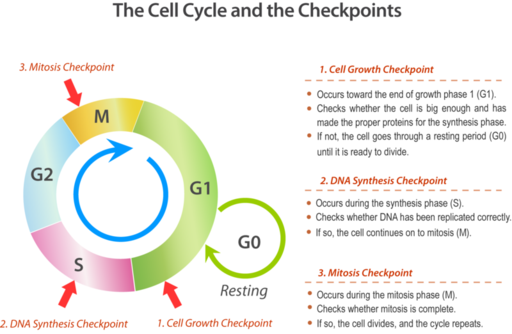
Checkpoints (arrows) in the eukaryotic cell cycle ensure that the cell is ready to proceed before it moves on to the next phase of the cycle.
-
The G1 checkpoint, just before entry into S phase, makes the key decision of whether the cell should divide.
-
The S checkpoint determines if the DNA has been replicated properly.
-
The mitotic spindle checkpoint occurs at the point in metaphase where all the chromosomes should have aligned at the mitotic plate.
Cancer and the Cell Cycle
Cancer
is a disease that occurs when the cell cycle is no longer regulated. This may happen because a cell’s DNA becomes damaged. Damage can occur due to exposure to hazards such as radiation or toxic chemicals. Cancerous cells generally divide much faster than normal cells. They may form a mass of abnormal cells called a
tumor
(see
Figure
below
). The rapidly dividing cells take up nutrients and space that normal cells need. This can damage tissues and organs and eventually lead to death.
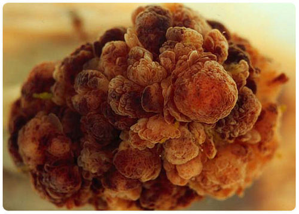
These cells are cancer cells, growing out of control and forming a tumor.
Cancer is discussed in the video at
http://www.youtube.com/watch?v=RZhL7LDPk8w
.
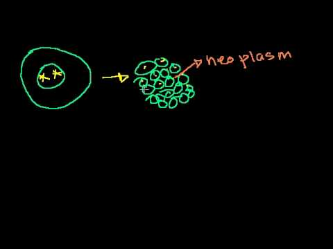
Click on the image above for more content
Lesson Summary
-
Cell division is part of the life cycle of virtually all cells. It is a more complicated process in eukaryotic than prokaryotic cells because eukaryotic cells have multiple chromosomes and a nucleus.
-
The cell cycle is a repeating series of events that cells go through. It includes growth, DNA synthesis, and cell division. In eukaryotic cells, there are two growth phases, and cell division includes mitosis.
-
The cell cycle is controlled by regulatory proteins at three key checkpoints in the cycle. The proteins signal the cell to either start or delay the next phase of the cycle.
-
Cancer is a disease that occurs when the cell cycle is no longer regulated. Cancer cells grow rapidly and may form a mass of abnormal cells called a tumor.
Lesson Review Questions
Recall
1. Describe binary fission.
2. What is mitosis?
3. Identify the phases of the eukaryotic cell cycle.
4. What happens during interphase?
5. Define cancer.
Apply Concepts
6. How might the relationship between cancer and the cell cycle be used in the search for causes of cancer?
Think Critically
7. Cells go through a series of events that include growth, DNA synthesis, and cell division. Why are these events best represented by a cycle diagram?
8. Contrast cell division in prokaryotes and eukaryotes. Why are the two types of cell division different?
9. Explain how the cell cycle is regulated.
10. Why is DNA replication essential to the cell cycle?
Points to Consider
When a eukaryotic cell divides, the nucleus divides first in the process of mitosis.
-
What do you think happens during mitosis? Can you predict what molecules and cell structures are involved in this process?
-
How do you think mitosis might differ from binary fission? What steps might be involved in mitosis?
Chromosomes and Mitosis
Lesson Objectives
-
Describe chromosomes and their role in mitosis.
-
Outline the phases of mitosis.
Vocabulary
-
anaphase
-
centromere
-
chromatid
-
chromatin
-
chromosome
-
gene
-
homologous chromosomes
-
metaphase
-
prophase
-
telophase
Introduction
In eukaryotic cells, the nucleus divides before the cell itself divides. The process in which the nucleus divides is called mitosis. Before mitosis occurs, a cell’s DNA is replicated. This is necessary so that each daughter cell will have a complete copy of the genetic material from the parent cell. How is the replicated DNA sorted and separated so that each daughter cell gets a complete set of the genetic material? To understand how this happens, you need to know more chromosomes.
Chromosomes
Chromosomes
are coiled structures made of DNA and proteins. Chromosomes are the form of the genetic material of a cell during cell division. During other phases of the cell cycle, DNA is not coiled into chromosomes. Instead, it exists as a grainy material called
chromatin
.
The vocabulary of DNA: chromosomes, chromatids, chromatin, transcription, translation, and replication is discussed at
http://www.youtube.com/watch?v=s9HPNwXd9fk
(18:23).
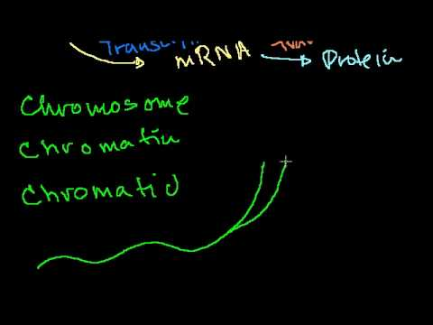
Click on the image above for more content
Chromatids and the Centromere
DNA condenses and coils into the familiar X-shaped form of a chromosome, shown in
Figure
below
, only after it has replicated. (You can watch DNA coiling into a chromosome at the link below.) Because DNA has already replicated, each chromosome actually consists of two identical copies. The two copies are called sister
chromatids
. They are attached to one another at a region called the
centromere
. A remarkable animation can be viewed at
http://www.hhmi.org/biointeractive/dna-packaging
.
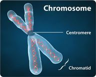
Chromosome. After DNA replicates, it forms chromosomes like the one shown here.
Chromosomes and Genes
The DNA of a chromosome is encoded with genetic instructions for making proteins. These instructions are organized into units called
genes
. Most genes contain the instructions for a single protein. There may be hundreds or even thousands of genes on a single chromosome.
Human Chromosomes
Human cells normally have two sets of chromosomes, one set inherited from each parent. There are 23 chromosomes in each set, for a total of 46 chromosomes per cell. Each chromosome in one set is matched by a chromosome of the same type in the other set, so there are actually 23 pairs of chromosomes per cell. Each pair consists of chromosomes of the same size and shape that also contain the same genes. The chromosomes in a pair are known as
homologous chromosomes
.
Mitosis and Cytokinesis
During mitosis, when the nucleus divides, the two chromatids that make up each chromosome separate from each other and move to opposite poles of the cell. This is shown in
Figure
below
. You can watch an animation of the process at the following link:
http://www.biology.arizona.edu/Cell_bio/tutorials/cell_cycle/MitosisFlash.html
.
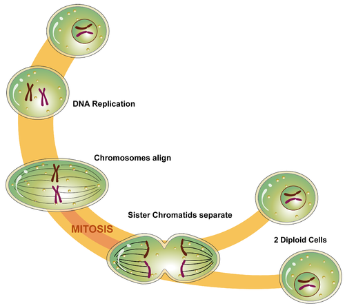
Mitosis is the phase of the eukaryotic cell cycle that occurs between DNA replication and the formation of two daughter cells. What happens during mitosis?
Mitosis actually occurs in four phases. The phases are called prophase, metaphase, anaphase, and telophase. They are shown in
Figure
below
and described in greater detail in the following sections.
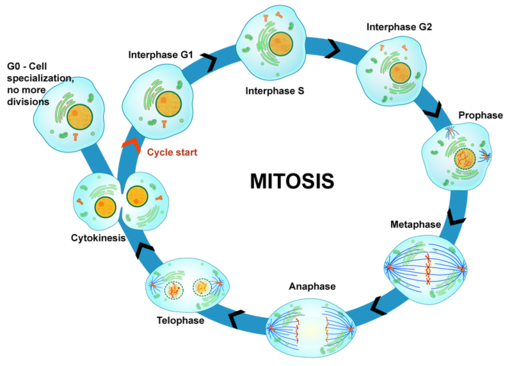
Mitosis in the Eukaryotic Cell Cycle. Mitosis is the multi-phase process in which the nucleus of a eukaryotic cell divides.
Prophase
The first and longest phase of mitosis is
prophase
. During prophase, chromatin condenses into chromosomes, and the nuclear envelope, or membrane, breaks down. In animal cells, the centrioles near the nucleus begin to separate and move to opposite poles of the cell. As the centrioles move, a spindle starts to form between them. The spindle, shown in
Figure
below
, consists of fibers made of microtubules.
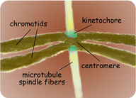
Spindle. The spindle starts to form during prophase of mitosis. Kinetochores on the spindle attach to the centromeres of sister chromatids.
Metaphase
During
metaphase
, spindle fibers attach to the centromere of each pair of sister chromatids (see
Figure
below
). The sister chromatids line up at the equator, or center, of the cell. The spindle fibers ensure that sister chromatids will separate and go to different daughter cells when the cell divides.
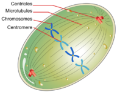
Chromosomes, consisting of sister chromatids, line up at the equator of the cell during metaphase.
Anaphase
During
anaphase
, sister chromatids separate and the centromeres divide. The sister chromatids are pulled apart by the shortening of the spindle fibers. This is like reeling in a fish by shortening the fishing line. One sister chromatid moves to one pole of the cell, and the other sister chromatid moves to the opposite pole. At the end of anaphase, each pole of the cell has a complete set of chromosomes.
Telophase
During
telophase
, the chromosomes begin to uncoil and form chromatin. This prepares the genetic material for directing the metabolic activities of the new cells. The spindle also breaks down, and new nuclear membranes form.
Cytokinesis
Cytokinesis is the final stage of cell division in eukaryotes as well as prokaryotes. During cytokinesis, the cytoplasm splits in two and the cell divides. Cytokinesis occurs somewhat differently in plant and animal cells, as shown in
Figure
below
. In animal cells, the plasma membrane of the parent cell pinches inward along the cell’s equator until two daughter cells form. In plant cells, a cell plate forms along the equator of the parent cell. Then, a new plasma membrane and cell wall form along each side of the cell plate.
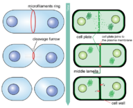
Cytokinesis is the final stage of eukaryotic cell division. It occurs differently in animal and plant cells.
The phases of mitosis are discussed in the video:
http://www.youtube.com/watch?v=LLKX_4DHE3I
.
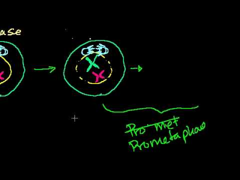
Click on the image above for more content
Lesson Summary
-
Chromosomes are coiled structures made of DNA and proteins. They form after DNA replicates and are the form in which the genetic material goes through cell division. Chromosomes contain genes, which code for proteins.
-
Cell division in eukaryotic cells includes mitosis, in which the nucleus divides, and cytokinesis, in which the cytoplasm divides and daughter cells form.
-
Mitosis occurs in four phases, called prophase, metaphase, anaphase, and telophase.
Lesson Review Questions
Recall
1. What are chromosomes? When do they form?
2. Identify the chromatids and the centromere of a chromosome.
3. List the phases of mitosis.
4. What happens during prophase of mitosis?
5. During which phase of mitosis do sister chromatids separate?
6. Describe what happens during cytokinesis in animal cells.
Apply Concepts
7. If a cell skipped metaphase during mitosis, how might this affect the two daughter cells?
Think Critically
8. Explain how chromosomes are related to chromatin. Why are chromosomes important for mitosis?
9. Explain the significance of the spindle in mitosis.
Points to Consider
Cell division occurs not only as organisms grow. It also occurs when they reproduce.
-
What role do you think cell division plays when prokaryotes such as bacteria reproduce?
-
How do you think cell division is involved in the reproduction of eukaryotes such as humans?
Reproduction and Meiosis
Lesson Objectives
-
Compare and contrast asexual and sexual reproduction.
-
Give an overview of sexual reproduction, and outline the phases of meiosis.
-
Explain why sexual reproduction leads to variation in offspring.
-
Define life cycle, and identify different types of sexual life cycles.
Vocabulary
-
asexual reproduction
-
crossing-over
-
diploid
-
egg
-
fertilization
-
gamete
-
gametogenesis
-
haploid
-
independent assortment
-
life cycle
-
meiosis
-
sexual reproduction
-
sperm
-
zygote
Introduction
Cell division is how organisms grow and repair themselves. It is also how they produce offspring. Many single-celled organisms reproduce by binary fission. The parent cell simply divides to form two daughter cells that are identical to the parent. In many other organisms, two parents are involved, and the offspring are not identical to the parents. In fact, each offspring is unique. Look at the family in
Figure
below
. The children resemble their parents, but they are not identical to them. Instead, each has a unique combination of characteristics inherited from both parents. In this lesson, you will learn how this happens.
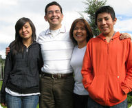
Family Portrait: Mother, Daughter, Father, and Son. Children resemble their parents, but they are never identical to them. Do you know why this is the case?
Reproduction: Asexual vs. Sexual
Reproduction is the process by which organisms give rise to offspring. It is one of the defining characteristics of living things. There are two basic types of reproduction: asexual reproduction and sexual reproduction.
Asexual Reproduction
Asexual reproduction
involves a single parent. It results in offspring that are genetically identical to each other and to the parent. All prokaryotes and some eukaryotes reproduce this way. There are several different methods of asexual reproduction. They include binary fission, fragmentation, and budding.
-
Binary fission occurs when a parent cell splits into two identical daughter cells of the same size. This process was described in detail in the lesson “Cell Division and the Cell Cycle.”
-
Fragmentation occurs when a parent organism breaks into fragments, or pieces, and each fragment develops into a new organism. Starfish, like the one in
Figure
below
, reproduce this way. A new starfish can develop from a single ray, or arm.
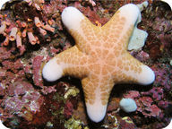
Starfish reproduce by fragmentation. Starfish, however, are also capable of sexual reproduction.
-
Budding occurs when a parent cell forms a bubble-like bud. The bud stays attached to the parent cell while it grows and develops. When the bud is fully developed, it breaks away from the parent cell and forms a new organism. Budding in yeast is shown in
Figure
below
.
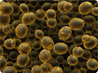
Yeast reproduces by budding. Both are types of asexual reproduction.
Asexual reproduction can be very rapid. This is an advantage for many organisms. It allows them to crowd out other organisms that reproduce more slowly. Bacteria, for example, may divide several times per hour. Under ideal conditions, 100 bacteria can divide to produce millions of bacterial cells in just a few hours! However, most bacteria do not live under ideal conditions. If they did, the entire surface of the planet would soon be covered with them. Instead, their reproduction is kept in check by limited resources, predators, and their own wastes. This is true of most other organisms as well.
Sexual Reproduction
Sexual reproduction
involves two parents. As you can see from
Figure
below
, in sexual reproduction, parents produce reproductive cells—called
gametes
—that unite to form an offspring. Gametes are
haploid
cells. This means they contain only half the number of chromosomes found in other cells of the organism. Gametes are produced by a type of cell division called meiosis, which is described in detail below. The process in which two gametes unite is called
fertilization
. The fertilized cell that results is referred to as a
zygote
. A zygote is
diploid
cell, which means that it has twice the number of chromosomes as a gamete.
Mitosis, Meiosis, and Sexual Reproduction is discussed at
http://www.youtube.com/watch?v=kaSIjIzAtYA
.
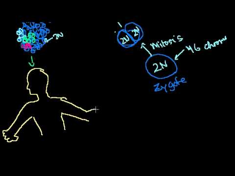
Click on the image above for more content
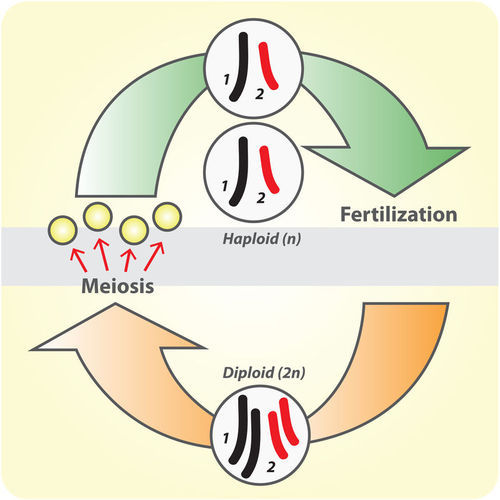
Cycle of Sexual Reproduction. Sexual reproduction involves the production of haploid gametes by meiosis. This is followed by fertilization and the formation of a diploid zygote. The number of chromosomes in a gamete is represented by the letter n. Why does the zygote have 2n, or twice as many, chromosomes?
Meiosis
The process that produces haploid gametes is meiosis (see
Figure
above
).
Meiosis
is a type of cell division in which the number of chromosomes is reduced by half. It occurs only in certain special cells of the organisms. During meiosis, homologous chromosomes separate, and haploid cells form that have only one chromosome from each pair. Two cell divisions occur during meiosis, and a total of four haploid cells are produced. The two cell divisions are called meiosis I and meiosis II. The overall process of meiosis is summarized in
Figure
below
. It is also described in detail below. You can watch an animation of meiosis at this link:
http://www.youtube.com/watch?v=D1_-mQS_FZ0&feature=related
.
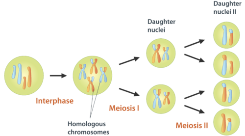
Overview of Meiosis. During meiosis, homologous chromosomes separate and go to different daughter cells. This diagram shows just the nuclei of the cells.
Phases of Meiosis
Meiosis I begins after DNA replicates during interphase. In both meiosis I and meiosis II, cells go through the same four phases as mitosis. However, there are important differences between meiosis I and mitosis. The flowchart in
Figure
below
shows what happens in both meiosis I and II. You can follow the changes in the flowchart as you read about them below.
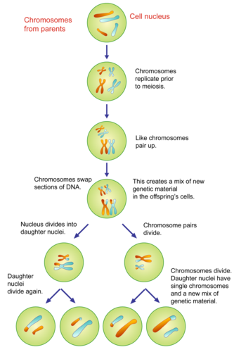
Phases of Meiosis. This flowchart of meiosis shows meiosis I in greater detail than meiosis II. Meiosis I—but not meiosis II—differs somewhat from mitosis. Compare meiosis I in this flowchart with the earlier figure featuring mitosis. How does meiosis I differ from mitosis?
The phases of meiosis are discussed at
http://www.youtube.com/watch?v=ijLc52LmFQg
(27:23).
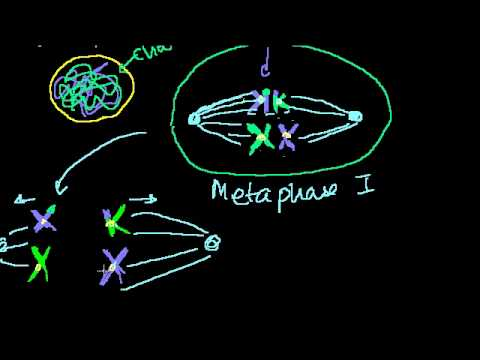
Click on the image above for more content
Meiosis I
-
Prophase I: The nuclear envelope begins to break down, and the chromosomes condense. Centrioles start moving to opposite poles of the cell, and a spindle begins to form. Importantly, homologous chromosomes pair up, which is unique to prophase I. In prophase of mitosis and meiosis II, homologous chromosomes do not form pairs in this way. During prophase I, crossing-over occurs (see below).
-
Metaphase I: Spindle fibers attach to the paired homologous chromosomes. The paired chromosomes line up along the equator of the cell. This occurs only in metaphase I. In metaphase of mitosis and meiosis II, it is sister chromatids that line up along the equator of the cell.
-
Anaphase I: Spindle fibers shorten, and the chromosomes of each homologous pair start to separate from each other. One chromosome of each pair moves toward one pole of the cell, and the other chromosome moves toward the opposite pole.
-
Telophase I and Cytokinesis: The spindle breaks down, and new nuclear membranes form. The cytoplasm of the cell divides, and two haploid daughter cells result. The daughter cells each have a random assortment of chromosomes, with one from each homologous pair. Both daughter cells go on to meiosis II.
Meiosis II
-
Prophase II: The nuclear envelope breaks down and the spindle begins to form in each haploid daughter cell from meiosis I. The centrioles also start to separate.
-
Metaphase II: Spindle fibers line up the sister chromatids of each chromosome along the equator of the cell.
-
Anaphase II: Sister chromatids separate and move to opposite poles.
-
Telophase II and Cytokinesis: The spindle breaks down, and new nuclear membranes form. The cytoplasm of each cell divides, and four haploid cells result. Each cell has a unique combination of chromosomes.
Mitosis, Meiosis, and Sexual Reproduction is discussed at
http://www.youtube.com/watch?v=kaSIjIzAtYA
(18:23).
Click on the image above for more content
Gametogenesis
At the end of meiosis, four haploid cells have been produced, but the cells are not yet gametes. The cells need to develop before they become mature gametes capable of fertilization. The development of haploid cells into gametes is called
gametogenesis
. Gametogenesis may differ between males and females. Male gametes are called
sperm
. Female gametes are called
eggs
. In human males, for example, the process that produces mature sperm cells is called spermatogenesis. During this process, sperm cells grow a tail and gain the ability to “swim,” like the human sperm cell shown in
Figure
below
. In human females, the process that produces mature eggs is called oogenesis. Just one egg is produced from the four haploid cells that result from meiosis. The single egg is a very large cell, as you can see from the human egg in
Figure
below
.
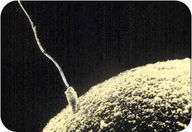
A human sperm is a tiny cell with a tail. A human egg is much larger. Both cells are mature haploid gametes that are capable of fertilization. What process is shown in this photograph?
Sexual Reproduction and Genetic Variation
Sexual reproduction results in offspring that are genetically unique. They differ from both parents and also from each other. This occurs for a number of reasons.
-
When homologous chromosomes pair up during meiosis I, crossing-over can occur.
Crossing-over
is the exchange of genetic material between non-sister chromatids of homologous chromosomes. It results in new combinations of genes on each chromosome.
-
When cells divide during meiosis, homologous chromosomes are randomly distributed to daughter cells, and different chromosomes segregate independently of each other. This called is called
independent assortment
. It results in gametes that have unique combinations of chromosomes.
-
In sexual reproduction, two gametes unite to produce an offspring. But which two of the millions of possible gametes will it be? This is likely to be a matter of chance. It is obviously another source of genetic variation in offspring.
All of these mechanisms working together result in an amazing amount of potential variation. Each human couple, for example, has the potential to produce more than 64 trillion genetically unique children. No wonder we are all different!
Sexual Reproduction and Life Cycles
Sexual reproduction occurs in a cycle. Diploid parents produce haploid gametes that unite and develop into diploid adults, which repeat the cycle. This series of life stages and events that a sexually reproducing organism goes through is called its
life cycle
. Sexually reproducing organisms can have different types of life cycles. Three are described in the following sections.
Haploid Life Cycle
The haploid life cycle (
Figure
below
) is the simplest life cycle. It is found in many single-celled organisms. Organisms with a haploid life cycle spend the majority of their lives as haploid gametes. When the haploid gametes fuse, they form a diploid zygote. It quickly undergoes meiosis to produce more haploid gametes that repeat the life cycle.
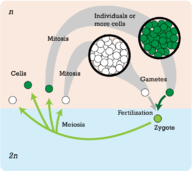
Haploid Life Cycle. The letter
n
indicates haploid stages of the life cycles, and 2
n
indicates diploid stages.
Diploid Life Cycle
Organisms with a diploid life cycle (
Figure
below
) spend the majority of their lives as diploid adults. When they are ready to reproduce, they undergo meiosis and produce haploid gametes. Gametes then unite in fertilization and form a diploid zygote. The zygote develops into a diploid adult that repeats the life cycle. Can you think of an organism with a diploid life cycle? (
Hint:
What type of life cycle do humans have?)
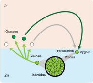
Diploid Life Cycle. The letter
n
indicates haploid stages of the life cycles, and 2
n
indicates diploid stages.
Alternation of Generations
Organisms that have a life cycle with alternating generations (
Figure
below
) switch back and forth between diploid and haploid stages. Organisms with this type of life cycle include plants, algae, and some protists. These life cycles may be quite complicated. You can read about them in later chapters.
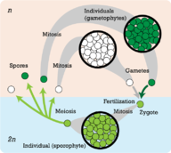
Alternation of Generations. The letter
n
indicates haploid stages of the life cycles, and 2
n
indicates diploid stages.
Lesson Summary
-
Asexual reproduction involves one parent and produces offspring that are genetically identical to each other and to the parent. Sexual reproduction involves two parents and produces offspring that are genetically unique.
-
During sexual reproduction, two haploid gametes join in the process of fertilization to produce a diploid zygote. Meiosis is the type of cell division that produces gametes. It involves two cell divisions and produces four haploid cells.
-
Sexual reproduction has the potential to produce tremendous genetic variation in offspring. This variation is due to independent assortment and crossing-over during meiosis and random union of gametes during fertilization.
-
A life cycle is the sequence of stages an organisms goes through from one generation to the next. Organisms that reproduce sexually can have different types of life cycles, such as haploid or diploid life cycles.
Lesson Review Questions
Recall
1. What are three types of asexual reproduction?
2. Define gamete and zygote. What number of chromosomes does each have?
3. What happens during fertilization?
4. Outline the phases of meiosis.
5. What is a life cycle?
6. What is gametogenesis, and when does it occur?
Apply Concepts
7. Create a diagram to show how crossing-over occurs and how it creates new gene combinations on each chromosome.
8. An adult organism produces gametes that quickly go through fertilization and form diploid zygotes. The zygotes mature into adults, which live for many years. Eventually the adults produce gametes and the cycle repeats. What type of life cycle does this organism have? Explain your answer.
Think Critically
9. Compare and contrast asexual and sexual reproduction.
10. Explain why sexual reproduction results in genetically unique offspring.
11. Explain how meiosis I differs from mitosis.
Points to Consider
In sexually reproducing organisms, parents pass a copy of each type of chromosome to their offspring by producing gametes. When gametes are fertilized and form offspring, each has a unique combination of chromosomes and genes from both parents. The inherited gene combination determines the characteristics of the offspring.
-
Is it possible to predict possible gene combinations in offspring from the genes of their parents?
-
Can the characteristics of offspring be predicted from the characteristics of their parents?
Opening image courtesy of Conly Rieder/National Institutes of Health.
http://commons.wikimedia.org/wiki/File:Mitosis-fluorescent.jpg
. Public Domain.
References
-
CK-12 Foundation - Zachary Wilson. . CC-BY-NC-SA 3.0
-
CK-12 Foundation - LadyofHats. . CC-BY-NC-SA 3.0
-
CK-12 Foundation - Hana Zavadska. . CC-BY-NC-SA 3.0
-
CK-12 Foundation - Hana Zavadska. . CC-BY-NC-SA 3.0
-
Ed Uthman, MD.
http://web2.airmail.net/uthman/specimens/images/tvp.html
. Public Domain
-
Image copyright Cre8tive Images, 2010, modified by CK-12 Foundation.
http://www.shutterstock.com/
. Used under license from Shutterstock.com
-
. . CC-BY-NC-SA 3.0
-
CK-12 Foundation - Zachary Wilson and Mariana Ruiz Villarreal (LadyofHats) (cell images can be found at http://commons.wikimedia.org/wiki/User:LadyofHats/gallery2). . CC-BY-NC-SA 3.0
-
Courtesy of Nogales group and Lawrence Berkeley National Laboratory.
http://www.lbl.gov/Science-Articles/Archive/sabl/2007/Oct/onering.html
. Public Domain
-
CK-12 Foundation - LadyofHats. . CC-BY-NC-SA 3.0
-
CK-12 Foundation - LadyofHats. . CC-BY-NC-SA 3.0
-
Image copyright Juan Carlos Tinjaca, 2010.
http://www.shutterstock.com
. Used under license from Shutterstock.com
-
Image copyright stockpix4u, 2012.
http://www.shutterstock.com
. Used under license from Shutterstock.com
-
Image copyright Knorre, 2010.
http://www.shutterstock.com
. Used under license from Shutterstock.com
-
CK-12 Foundation - Rupali Raju. . CC-BY-NC-SA 3.0
-
CK-12 Foundation - Hana Zavadska, Mariana Ruiz Villarreal (LadyofHats). . CC-BY-NC-SA 3.0
-
CK-12 Foundation - Hana Zavadska, Marian Ruiz Villarreal (LadyofHats). . CC-BY-NC-SA 3.0
-
Courtesy of www.PDImages.com.
http://www.pdimages.com/03709.html-ssi
. Public Domain
-
CK-12 Foundation - Christopher Auyeung. . CC-BY-NC-SA 3.0
-
CK-12 Foundation - Christopher Auyeung. . CC-BY-NC-SA 3.0
-
CK-12 Foundation - Christopher Auyeung. . CC-BY-NC-SA 3.0
{kind=link}
{kind=link}